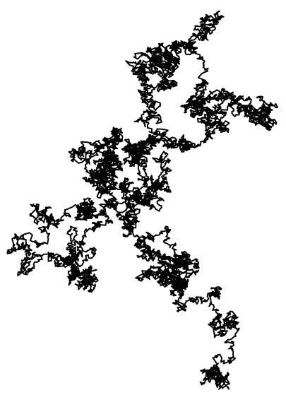

Notes

Course Projects
UChicago Math REU
Miscellaneous
- Tensors and Multilinear Algebra (updated Jan. 3, 2022)
- This is set of notes that I wrote while revisiting tensors
and multilinear algebra during my winter break of 2021-2022.
Initial inspiration came from
eigenchris's
Tensors for Beginners series on Youtube.